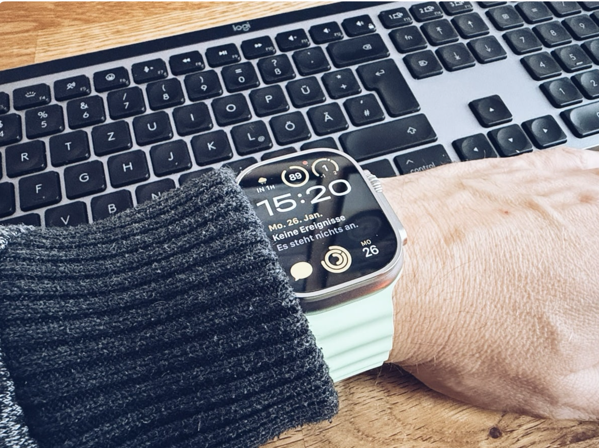

Smartwatch-Markt wächst wieder: So schaut es aktuell aus

Zum Beitrag: Der Smartwatch-Markt wächst wieder. Nach mehreren schwächeren Quartalen zeigt sich die Kategorie erholt, vor allem weil neue Gesundheitsfunktionen und längere Akkulaufzeiten wieder Interesse erzeugen.
Diese Variante bleibt nah am heutigen nativen Reader, nimmt aber das Bild etwas zurück und gibt dem Text eine ruhigere Breite.
Richtung: Alles Relevante steht oberhalb des Titels. Das ist klassisch, ruhig und schnell scannbar.